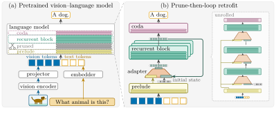

Retrofitting Recurrent Vision–Language Models from Pretrained Backbones
1 University of Tübingen, Tübingen AI Center · 2 KE:SAI
Abstract
Recent work shows that depth recurrence can be retrofitted into pretrained language models. In this work, we adapt this paradigm for visual understanding, using depth recurrence to reduce the parameter footprint of a pretrained vision-language model (VLM). To this end, we prune layers from the language backbone of the VLM and loop over a subset of the remaining layers. At each step of the loop, a linear adapter merges the block's output with the token representations from the preceding layers and projects the fused representation back into the block. As the pruning impacts the original model performance, we propose a three-stage recovery training: first, we leverage a language-only pretraining to recover the performance of the language backbone, followed by an alignment of the vision-language projector, and a full fine-tuning of the model via visual instruction tuning. In the first and the last stage, we distill the outputs of the pretrained non-recurrent model into the recurrent model, which further improves the recovery. We evaluate the proposed approach on the TinyLLaVA-1.4B backbone without introducing any new vision-language data during retrofitting. Our experiments demonstrate that the retrofitted recurrent model outperforms the unpruned baseline trained with the same recovery data while storing 23.3% fewer language parameters. We further show that the proposed retrofitting recurrence outperforms the setup of converting a recurrent LM into a VLM on the same data. Additionally, our ablations show how design choices, such as the adapter between recurrences and a larger recurrent block, lead to the improved performance of our approach. Finally, we find that our proposed model gains on reasoning-oriented benchmarks, whereas its performance on basic visual understanding benchmarks remains on par with the baseline.
Overview
Depth recurrence allocates test-time compute to iterating a block of layers rather than generating tokens, which keeps the context size and the memory overhead independent of the reasoning length. Recurrent VLMs have so far been built by adding a vision backbone to a recurrent language model or by looping an existing VLM without removing layers. We pursue a third option: we prune a block of intermediate layers from the language backbone of a pretrained VLM and loop over a subset of the remaining layers, converting the pretrained non-recurrent VLM into a recurrent one while reusing its weights. We refer to the result as retrofitted recurrent VLM (RR-VLM).
Method

We prune six of the 22 layers of the language backbone and apply an eight-layer recurrent block six times. An adapter concatenates the block's output with the prelude's output, and a linear layer compresses it back to the original dimensionality. Since the surgery degrades the backbone and misaligns it with the vision-language projector, we retrain in three stages: text-only repair of the backbone (S0), projector-only re-alignment (S1) and fine-tuning on visual instruction data (S2), with the pretrained model as distillation teacher in S0 and S2. No new vision-language data is introduced.
Results
On the TinyLLaVA-1.4B backbone, RR-VLM reaches 58.13 on average over nine benchmarks against 55.80 for the unpruned baseline trained on the same data, while storing 23.3% fewer language-model parameters. The pruned model without the loop reaches 52.41, so the gain is due to the recurrence itself. Retrofitting a pretrained VLM also outperforms adding a vision encoder to a pretrained recurrent language model (55.59). The gains concentrate on the reasoning-oriented benchmarks MMBench, RealWorldQA, SEED-Bench, AI2D and CV-Bench-2D, whereas basic visual understanding benchmarks stay on par.
Table 1: Comparison to baselines. The retrofit outperforms the baselines on average over nine benchmarks with 23.3% fewer stored language-model parameters. Sec. 5.1 of the paper defines the models. RR-VLM denotes our retrofitted recurrent VLM F64/8/4 of Sec. 3 of the paper and F1 the pruned single-pass model.
| Model | LM (B) | GQA | POPE | TVQA | SQA | MMB | RWQA | SEED | AI2D | CV2D | Avg |
|---|---|---|---|---|---|---|---|---|---|---|---|
| Baseline | |||||||||||
| TinyLLaVA-1.4B | 1.10 | 57.6 | 85.1 | 46.7 | 59.6 | 49.7 | 45.4 | 54.1 | 39.4 | 38.6 | 52.91 |
| Baselines, no recurrence | |||||||||||
| Baseline+(S1, S2) | 1.10 | 59.9 | 86.9 | 45.5 | 57.8 | 55.6 | 47.3 | 59.8 | 41.3 | 43.4 | 55.27 |
| Baseline+(S0, S1, S2) | 1.10 | 60.4 | 86.7 | 47.3 | 60.2 | 55.5 | 46.4 | 60.4 | 43.2 | 42.2 | 55.80 |
| Baseline(pruned)+(S0, S1, S2) (F1) | 0.84 | 58.0 | 86.1 | 37.7 | 50.3 | 48.6 | 47.6 | 58.3 | 38.1 | 47.1 | 52.41 |
| Converted recurrent LM (McLeish et al., 2025) | |||||||||||
| Recurrent LM+ViT+(S1, S2) | 0.84 | 58.8 | 86.3 | 41.5 | 52.5 | 52.7 | 50.6 | 60.7 | 43.6 | 53.7 | 55.59 |
| Pruned and looped (ours) | |||||||||||
| RR-VLM F64/8/4 | 0.84 | 59.2 | 86.7 | 47.7 | 59.1 | 58.9 | 50.5 | 62.6 | 44.6 | 53.9 | 58.13 |

More qualitative examples (Figures 3 and 4)


Ablations
- Training stages: removing the text-only stage S0 costs 3.68 pp, removing the alignment stage S1 costs 1.28 pp (Table 2).
- Layer allocation, adapter and looping: at equal compute a larger recurrent block is better, 4/8/4 beats 6/4/6 by 3.19 pp; the linear adapter is the best adapter; looping the whole block beats per-layer looping by 2.83 pp at r=2 and 5.40 pp at r=6 (Table 3).
- Distillation: distilling from the pretrained model in S2 improves the retrofitted model by 1.48 pp and the unpruned baseline by only 0.25 pp (Table 4).
- Training depth: a model trained at a fixed depth only works at that depth; a model trained with sampled recurrence works from r=2 to r=16 but does not improve beyond the trained depth (Table 5).
- KV-cache sharing: with n=3 cache copies the cache shrinks to 1.45× the base model's at a cost of 0.75 pp, with one copy to 0.727× at a cost of 5.43 pp (Table 6).
Ablation tables (Tables 2 to 6)
Table 2: Training stages. We remove single stages of the training strategy of Sec. 3.2 of the paper from our best performing setting (4/8/4, r=6, 60B S0 budget), each stage with its distillation term. The first row repeats the unpruned baseline of Table 1, which is trained with the full strategy. Avg is the mean of the nine columns to its left.
| Model and training stages | GQA | POPE | TVQA | SQA | MMB | RWQA | SEED | AI2D | CV2D | Avg |
|---|---|---|---|---|---|---|---|---|---|---|
| Baseline+(S0, S1, S2) | 60.4 | 86.7 | 47.3 | 60.2 | 55.5 | 46.4 | 60.4 | 43.2 | 42.2 | 55.80 |
| RR-VLM, S1, S2 | 59.6 | 86.5 | 45.5 | 54.6 | 52.1 | 44.1 | 61.0 | 40.0 | 46.6 | 54.45 |
| RR-VLM, S0, S2 | 59.3 | 86.6 | 47.0 | 57.1 | 56.7 | 48.8 | 62.4 | 42.7 | 51.2 | 56.85 |
| RR-VLM, S0, S1, S2 (ours) | 59.2 | 86.7 | 47.7 | 59.1 | 58.9 | 50.5 | 62.6 | 44.6 | 53.9 | 58.13 |
Table 3: Ablations. Each table changes one setting of the model named in its header and the best value is in bold. All tables (a), (b) and (c) use the 7.5B S0 budget without text distillation.
| (a) Layer allocation, 56 layers | |
|---|---|
| 6/4/6, r=11 | 52.56 |
| 4/6/4, r=8 | 54.15 |
| 4/8/4, r=6 | 55.75 |
| (b) Adapter, 4/6/4, r=6 | |
|---|---|
| A∅ (none) | 54.29 |
| Asc | 52.98 |
| Apc | 53.76 |
| Alin | 55.02 |
| (c) Looping variant, 4/6/4 | |
|---|---|
| per-layer looping, r=2 | 52.19 |
| per-layer looping, r=6 | 49.62 |
| block looping, r=6 | 55.02 |
Table 4: Knowledge distillation. We evaluate the impact of the knowledge distillation in S2. Each row states on which batches the distillation term is applied and with which weight λ and temperature τ. All rows use the 60B S0 budget and the 4/8/4 layer allocation and share the same S0, which applies the distillation term with λ=0.5 at τ=2. The first two rows give the unpruned baseline of Table 1 with and without the S2 distillation.
| Knowledge distillation | Avg |
|---|---|
| Baseline+(S0, S1, S2) (Table 1) | 55.80 |
| without S2 distillation | 55.55 |
| RR-VLM, no S2 distillation | 56.65 |
| RR-VLM, VL-KD only, λ=0.25 | 56.88 |
| + text-KD, τ=2 | 57.24 |
| + text-KD, τ=1 (ours) | 58.13 |
Table 5: Fixed against sampled training depth. Both models use the 4/8/4 layer allocation and the 7.5B S0 budget and differ only in the number of recurrences during training, fixed at r=6 or sampled with mean 6. The columns give GQA accuracy when the model is evaluated with r passes. Values marked † come from runs that were stopped early because the output had degenerated.
| GQA at test-time depth r | |||||||
|---|---|---|---|---|---|---|---|
| Training depth | r=2 | r=4 | r=5 | r=6 | r=8 | r=12 | r=16 |
| sampled, r̄=6 (Fr̃) | 57.8 | 59.3 | 59.5 | 59.5 | 59.4 | 59.1 | 59.3 |
| fixed, r=6 (Fr, our setting) | 0.0† | 0.0† | 43.1 | 59.7 | 50.9 | 4.2† | 0.0† |
Table 6: KV-cache sharing across passes at inference. The table analyses the KV cache per token as a multiple of the base model’s cache. The model keeps only n copies of the cache instead of one per pass. The six passes use these copies in turn, so with n=1 every pass shares one cache, and n=6 is our model without sharing.
| Setting | Cache | GQA | POPE | TVQA | SQA | MMB | RWQA | SEED | AI2D | CV2D | Avg |
|---|---|---|---|---|---|---|---|---|---|---|---|
| n=1 (last pass) | 0.727× | 49.1 | 86.7 | 18.6 | 59.3 | 57.0 | 47.7 | 61.2 | 42.2 | 52.5 | 52.70 |
| n=2 | 1.09× | 56.5 | 86.7 | 31.5 | 59.2 | 58.6 | 49.7 | 62.6 | 44.1 | 53.8 | 55.85 |
| n=3 | 1.45× | 58.6 | 86.7 | 41.8 | 59.4 | 58.6 | 50.5 | 62.6 | 44.4 | 53.9 | 57.38 |
| n=6 (ours) | 2.55× | 59.2 | 86.7 | 47.7 | 59.1 | 58.9 | 50.5 | 62.6 | 44.6 | 53.9 | 58.13 |
BibTeX
@article{iyengar2026retrofitting,
title = {Retrofitting Recurrent Vision--Language Models from Pretrained Backbones},
author = {Iyengar, Madhav and Geiger, Andreas and K{\"u}hne, Hilde},
journal = {arXiv preprint arXiv:2610.22075},
year = {2026}
}
Acknowledgments
This work was funded by the Federal Ministry of Research, Technology and Space (BMFTR) under the project XEI, FKZ: 16IS24079A. The authors gratefully acknowledge the Gauss Centre for Supercomputing e.V. (www.gauss-centre.eu) for providing computing time on the JUPITER Booster at Jülich Supercomputing Centre (JSC) under the project token-compression, and the computing resources provided by the ML Cloud of the Tübingen AI Center. We are grateful to Jonas Geiping and Takeru Miyato for insightful discussions on looped models.